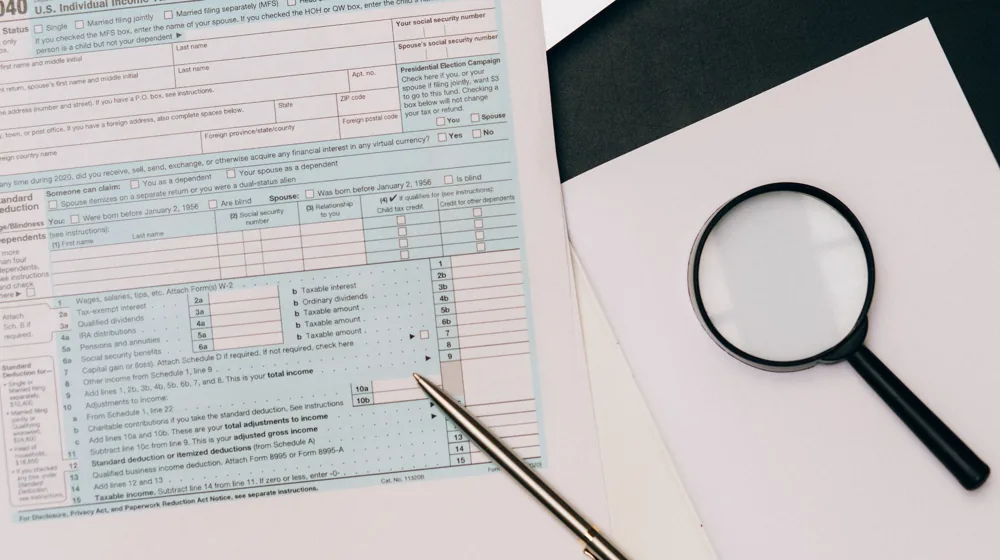

실손보험 갱신 전 놓치면 후회할 5가지 핵심 체크리스트
사진: Vlad Deep / Pexels (무료 이미지, 출처 표기)
실손보험 갱신, 왜 중요할까요?

실손보험은 의료비 부담을 줄여주는 필수적인 보험이지만, 대부분 갱신형으로 운영됩니다. 매년 또는 특정 주기마다 보험료와 보장 내용이 변경될 수 있어 갱신 시점을 신중하게 살펴야 합니다. 무심코 지나쳤다가 예상치 못한 보험료 인상이나 보장 축소로 손해를 볼 수도 있기 때문입니다.
특히 고령화가 진행될수록 의료비 지출이 늘어나 실손보험의 중요성은 더욱 커집니다. 갱신 시기를 맞아 나의 실손보험이 현재 나에게 가장 적합한 형태인지 점검하고, 필요한 경우 조정을 고려하는 것이 현명한 보험 생활의 시작입니다.
핵심 체크리스트 1: 보험료 인상 폭과 요인 확인
실손보험 갱신 시 가장 민감한 부분은 역시 보험료입니다. 갱신 통지서를 받으면 보험료가 얼마나 오르는지, 그리고 그 원인이 무엇인지부터 확인해야 합니다. 보험료 인상에는 주로 세 가지 요인이 작용합니다.
- 연령 증가: 나이가 들수록 질병 발생 위험이 커져 보험료가 인상됩니다.
- 손해율: 해당 보험 상품 전체 가입자들의 보험금 청구액이 많아지면 손해율이 높아져 보험료가 오릅니다.
- 의료수가 인상 및 자기부담금 조정: 정부 정책에 따른 의료수가 변동이나 보험사의 자체적인 자기부담금 구조 변경도 보험료에 영향을 줄 수 있습니다.
보험료 인상 폭이 지나치게 크다고 느껴진다면, 가입된 보험사에 문의하여 자세한 인상 근거를 확인하고 다른 대안을 모색할 필요가 있습니다. 2024년 6월 기준, 금융감독원은 불합리한 보험료 인상을 막기 위한 제도를 운영하고 있으니 참고하십시오.
핵심 체크리스트 2: 보장 내용 및 자기부담금 변경 여부
갱신 시에는 보험료뿐만 아니라 보장 내용과 자기부담금 비율이 변경될 수도 있습니다. 특히 실손보험은 1세대부터 4세대까지 여러 차례 개편되었으므로, 내가 가입한 상품이 어떤 세대에 해당하는지, 그리고 최신 상품과 어떤 차이가 있는지 이해하는 것이 중요합니다.
아래 표는 실손보험 세대별 주요 특징을 비교한 것입니다. 나의 보험이 어떤 특징을 가지고 있는지 파악하고, 현재의 의료비 패턴과 비교하여 적절성을 평가해 보세요.
특히, 비급여 항목에 대한 자기부담금 비율은 의료비 지출에 큰 영향을 미치므로 갱신 통지서나 보험증권을 통해 정확히 확인해야 합니다. 현재 사용 중인 비급여 진료가 많다면 자기부담금 비율이 낮은 상품이 유리할 수 있습니다.
핵심 체크리스트 3: 나의 건강 상태와 보험금 청구 이력 고려
실손보험은 가입자의 건강 상태나 보험금 청구 이력에 따라 갱신 후 보험료가 달라질 수 있습니다. 특히 4세대 실손보험부터는 비급여 특약의 보험금 청구 실적에 따라 보험료가 할인되거나 할증되는 제도가 도입되었습니다.
만약 최근 2년간 비급여 의료비 청구 실적이 없다면 다음 갱신 시 보험료 할인을 받을 수 있으며, 반대로 청구액이 많았다면 할증될 수 있습니다. 갱신 전 나의 비급여 의료비 청구 이력을 확인하고, 앞으로의 의료 계획을 고려하여 보험을 유지할지, 아니면 다른 대안을 찾아볼지 판단하는 것이 좋습니다.
핵심 체크리스트 4: 다른 실손보험으로 갈아탈까? 전환 조건 확인
기존 실손보험의 갱신 보험료가 너무 부담스럽거나, 보장 내용이 현재 내 상황에 맞지 않는다면 '계약 전환'을 고려해볼 수 있습니다. 기존 실손보험을 해지하고 새로운 실손보험에 가입하는 것이 아니라, 기존 보험을 유지하면서 보장 내용을 최신 실손보험으로 바꾸는 제도입니다.
가장 큰 장점은 신규 가입과 달리 별도의 심사 없이 최신 실손보험으로 전환할 수 있다는 점입니다. 이는 과거 병력이 있거나 고령인 경우에도 새로운 심사 없이 가입할 수 있다는 의미입니다. 다만, 전환 시 기존 보험의 좋은 조건(낮은 자기부담금 등)을 잃을 수 있고, 갱신 주기가 짧아질 수 있으니 꼼꼼하게 장단점을 비교해야 합니다. 자세한 전환 조건은 가입 보험사에 직접 문의하여 정확한 정보를 얻는 것이 필수적입니다.
실손보험 갱신, 현명하게 결정하는 방법
실손보험 갱신은 단순히 보험료를 납부하는 것을 넘어, 나의 건강과 재정을 지키는 중요한 과정입니다. 갱신 통지서를 받았을 때 위에서 제시한 체크리스트를 바탕으로 나의 보험을 면밀히 검토하는 시간을 가지십시오.
- 보험사 문의: 갱신 통지서에 명시된 보험사의 고객센터에 전화하여 궁금한 점을 해소합니다. 보험료 인상 요인, 보장 변경 내용, 전환 가능성 등을 구체적으로 질문하세요.
- 금융감독원 정보 활용: 금융감독원 '금융소비자 정보포털 파인' (fine.fss.or.kr)에서 실손보험 관련 최신 정보를 확인하고, 나에게 맞는 보험을 비교해볼 수 있습니다.
정확한 정보와 충분한 비교를 통해 자신에게 가장 유리한 선택을 내리는 것이 중요합니다. 급하게 결정하지 마시고, 필요하다면 보험 전문가의 도움을 받아 신중하게 판단하시길 권장합니다. 모든 정보는 2024년 6월 기준으로 작성되었으며, 정확한 사항은 공식 홈페이지나 해당 기관에서 다시 확인하시길 바랍니다.
🔗 이 글도 함께 보면 좋아요: 해외여행자보험, 이것 놓치면 손해! 내게 딱 맞는 가입 체크리스트 5가지